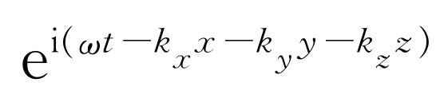

第48章 拍
§48-1 两列波的相加
不久前我们相当详细地讨论过光波的性质以及光波的干涉，即从不同波源发出的两列波叠加的效应。在所有这些分析中我们假设波源的频率全都相同。本章我们将讨论的某些现象则是由于具有不同 频率的两个波源的干涉所造成的。
很容易猜想到会发生什么事。我们采用与以前同样的做法，假设有两个相同的振动波源，其频率相等，相位则调整到比方说使它们发出的信号在到达某点P 时同相。到达这一点的如果是光，光就很强，如果是声，声音就很响；而若是电子，那么其中到达的就很多。反之，假如抵达P 点的信号彼此的相位差是180°，则在P 点我们就可能得不到信号，因为在该处净的振幅为最小。现在，假设某个人转动其中一个波源的“相位旋钮”，来回改变该波在P 点的相位，比方说先使其为0°，然后为180°，等等。当然，这样一来我们就会发现净的信号强度有变化。我们还可看出，如果一个波源的相位相对于另一个波源逐渐地、均匀地缓慢变化，由0°开始，增加到10°，20°，30°，40°，等等，那么在P 点所测得的就是一串强弱相间的“脉动”，因为当相位移过360°，振幅就回到极大值。当然，说一个波源的相位相对于另一个波源以均匀的速率移动就等于说两个波源在每秒钟内的振动次数略有差别。
于是我们知道答案就是：假定两个波源的频率略有差别，我们将发现其净结果就是出现一个强度缓慢脉动的振动。对本课题而言，这实际上就是一切！
这个结果也很容易用数学公式来表示。例如，假定有两列波，我们暂时不去考虑所有的空间关系，而只是分析到达P 点的波。不妨假设一个波源在这一点引起的振动是cos ω 1 t ，另一个波源则是cos ω 2 t ，ω 1 与ω 2 不完全相等。当然，它们的振幅也可能不相同，但这个一般性的问题可以留在后面去解决，我们不妨先假定振幅是相等的。在P 点的总振幅就是这两个余弦函数之和。如果像图48-1那样，画出波的振幅对时间的曲线，我们就看到波峰与波峰重合之处恰好出现较强的波，而在波峰与波谷重合之处，总振幅实际上为零，而当波峰再度重合时，又得到较强的波。
图48-1 频率比为8∶10的两列余弦波的叠加。图中各个“拍”内的图样精确重复这一点在一般情况下并不具有代表性
在数学上，我们只要将两个余弦相加并对结果进行一些整理。对于余弦函数有一些有用的关系式，它们是不难推得的。我们当然知道
ei（ a + b） =ei a ei b ，（48.1）
而ei a 有一个实部（即cos a ）和一个虚部（即sin a ）。如果取ei（ a + b） 的实部，就得到cos（a +b ）。将ei a 和ei b 相乘，就有
ei a ei b =（cos a +isin a ）（cos b +isin b ），
我们得到cos a cos b -sin a sin b ，加上一些虚部。但我们现在只要实部，于是有
cos（a +b ）=cos a cos b -sin a sin b .（48.2）
假如改变b 的符号，因为这时余弦不变而正弦变号，所以，对-b ，等式就是
cos（a -b ）=cos a cos b +sin a sin b （48.3）
将这两个等式相加，消掉正弦项，便有
将这个公式反过来，可以得到cos α +cos β 的公式，这只要令α =a +b ，β =a -b ，于是a =（α +β ）/2，b =（α -β ）/2，因此有
现在可以来分析我们的问题了，cos ω 1 t 与cos ω 2 t 之和为
我们假定两个频率近似相等，这样（ω 1 +ω 2 ）/2就是平均频率，它与ω 1 与ω 2 几乎都相同。但ω 1 -ω 2 远小于 ω 1 或ω 2 ，因为已假设ω 1 与ω 2 近似相等。这意味着我们可以这样来说明这个解：它是一个多少与我们开始时所具有的波相类似的高频余弦波，但它的“大小”将缓慢地变动，即以频率（ω 1 -ω 2 ）/2作脉动变化。但这是不是人们所听到的拍频呢。虽然式（48.6）表示振幅随cos［（ω 1 -ω 2 ）t /2］而变化，实际上它所告诉我们的是高频振动被包含在两个相反的余弦曲线之内（如图48-1中的虚线所示）。根据这一点人们可以说振幅变化的频率是（ω 1 -ω 2 ）/2，但如果说到波的强度 ，则必须认为它的频率两倍于此。这就是说，按强度而言，振幅的调制频率是ω 1 -ω 2 ，虽然式（48.6）表明我们所乘的余弦因子其频率为此一半。存在这种差别的物理原因是在第二个半周内高频波的相位关系有一点不同。
如果不去考虑这个小小的复杂性，我们可以得出结论说，将频率为ω 1 与ω 2 的两列波相加，就会得到以平均频率（ω 1 +ω 2 ）/2振动而强度又按频率（ω 1 -ω 2 ）变化的合成波动。
如果两列波的振幅不相同，我们可以重新再计算一下：将余弦乘上不同的振幅A
1
和A
2
，利用类似于式（48.2）～（48.5）的关系式，进行一系列运算，整理等。然而还可用其他一些较简易方法来进行同样的分析。例如，我们知道指数的运算比正弦和余弦的运算要容易得多，并且可以将A
1
cos ω
1
t
看作为
的实部。另一个波也同样地可以看作是 的实部。如果将两者相加，就得到
，将平均频率的因子提出，就有
的实部。如果将两者相加，就得到
，将平均频率的因子提出，就有
我们再一次得到带有低频调制的高频波。
§48-2 拍符和调制
如果现在要求出式（48.7）所表示的合成波的强度，可以取该式左边或右边的绝对值平方。我们取左边来计算，于是强度为
由此可见强度以频率（ω 1 -ω 2 ）涨落，其变化界限则为（A 1 +A 2 ）2 和（A 1 -A 2 ）2 。如果A 1 ≠A 2 ，则最小强度不为0。
另一种表示这个概念的方法是作图，如图48-2所示。我们画一根长为A 1 ，以频率ω 1 旋转的矢量，用以表示复平面上的一个波。再画出一个长为A 2 ，旋转频率为ω 2 的矢量来表示第二个波。如果两个频率正好相等，那么旋转时合矢量的长度就固定不变，于是由此两个波得出的是确定不变的强度。但是如果频率略有差别，两个复矢量就以不同速率旋转。图48-3表示相对于矢量 所见到的情况。我们看到A 2 缓慢地转离A 1 ，于是两列波叠加后得出的合成振幅起先最强，然后，两者拉开，当A 2 相对于A 1 转过180°时，合成振幅变得特别弱，等等。在矢量旋转时，合矢量的振幅时而变大，时而变小，因而强度作脉动变化。这是一个相当简单的方法，还有许多别的方法表示这件事情。
图48-2 两个相同频率复矢量的合成
图48-3 以一个旋转矢量为参考系来看，两个不同频率的复矢量的合成。图中绘出了缓慢旋转的矢量的九个相继位置
上述效应很容易从实验上观察到，在声学实验中，我们可以将两个扬声器分别连接到两个独立的振荡器上，一个振荡器接一个扬声器，因此每个扬声器发出一种音调。于是我们从一个声源接收到一种音符，从另一个声源接收到另一种音符。如果使彼此的频率精确相等，则其总的效果为在一定的空间位置上具有确定强度。如果接着使两个音调略微调偏一些，就会听到强度上的某些变化。调偏得越厉害，声音的变化就越快。当这种变化每秒钟超过十次左右时，人耳要跟上这种变化就有些困难了。
我们也可以从示波器上见到这个效应，在示波器上可以直接显示出两个扬声器的电流的和。假如脉动频率颇低，我们就简单地看到一列振幅作脉动变化的正弦波，但当脉动加快时，我们就看到如图48-1所示的那类波形。当频率差再增大时，图中的“隆起部分”之间靠得更近。此外，如果两个信号振幅并不相等，一个强于另一个，那么，正如我们所预料的那样，所得到的合成波的振幅永远不会变为零。无论从声学上还是从电学上都得出了应得的结果。
也会出现与上述相反的现象！在利用所谓调幅 （AM）现象的无线电发送中，广播台是这样播送声音的：无线电发射机在广播频带产生频率很高的交流振荡，比如说800 kHz。如果接通这个载波信号 ，电台就会发出频率为800 kHz幅度均匀不变的电波。将“消息”发送出去（常常是一类无用的消息，诸如去买哪种牌子的汽车）的方法是，当某个人的讲话送入话筒后，载波信号的幅度就随进入话筒的声音振动一起发生变化。
我们举一个数学处理上最简单的例子。如果有一个女高音歌手正在唱着一首优美动听的歌曲，她的声带产生完好的正弦振动，那么我们就得到一个强度如图48-4那样交替变化的信号。然后，在接收机中将这样的音频变化复原，我们去掉载波只看包络，这个包络就表示了声带的振动，或歌手的声音。于是扬声器就在空气中以同样的频率作相应的振动，而听众基本上不能够说出这与真实声音有何区别。当然由于许多畸变以及其他微妙的效应，实际上有可能说出我们是在听收音机还是在听真的女高音在歌唱；不然事情就像上面所说的那样。
§48-3 旁频带
在数学上，刚才所描写的调制波可以表示为
S =（1+b cos ω m t ）cos ω c t ，（48.9）
这里ω c 表示载波频率，ω m 是音频。我们再次利用有关余弦的定理，或者利用eiθ 来计算（虽然用ei θ 简单一些，但这是一回事，没有什么差别），于是得到
所以，从另一个观点来看，我们可以说，电台所输出的波是由三列波叠加在一起的：首先是频率ω c 的规则波，即载波，另外两个是新的波，各自具有一个新的频率。一个是载频加上调频，另一个是载频减去调频。因此，假如我们画出信号发生器产生的信号强度对频率的函数图像，就会在载波频率上发现颇高的强度，这是很自然的，但当一位歌唱家开始歌唱时，我们就会在频率（ω c +ω m ）及（ω c -ω m ）处突然发现正比于歌唱家声强b 2 的强度，如图48-5所示。这就称为旁频带 ，只要在发射机中存在调制信号，就会有旁频带出现。如果同时出现的律音不止一个，比如说有两个律音ωm 及 ，即有两个乐器在演奏；或者说，假如存在着另外一个复杂的余弦波，那么，从数学上可以看出，我们将会得到频率相应地为 的更多的波。
因此，当有一个可以表示成许多余弦之和 [1] 的复杂调制时，我们就会发现实际的发射机发送的是在一段频率范围内的信号，即载频加上或减去调制信号所包含的最高频率。
虽然原先我们可能认为无线电发射机发送的只是载波的标称频率，因为在广播台里有许多大的、超稳定的晶体振荡器，而且一切都调整到正好是800 kHz，但在某人刚宣告 他们在800 kHz播音那个瞬间，他已调制了800 kHz载波，因此就不再正好是800 kHz了！假如我们建造的放大器，其频宽覆盖了人耳灵敏度的一个很大区域（人耳可以听到高达20 kHz的声音，但通常发射机与接收机工作范围不超过10 kHz，所以我们不能听到最高频率部分），而当一个人说话时，他的声音中可以包括高到比如说10 kHz的频率。那么发射机发送的频率可以从790 kHz到810 kHz。现在，假定另一个广播台的频率是795 kHz，那么就会出现混乱。此外，如果我们的接收机的灵敏度如此之佳，以致只接收800 kHz的信号，而不会接收到上下10 kHz的信号，那么我们也不能听到播音员在说话，因为信息正是在这两种频率上！因此，使各广播台的工作频率彼此保持一定的间隔是绝对必要的，这样它们的旁频带才不会交叠，此外接收机的选择性必须不至于强到不能接收到主标称频率和旁频带信号。对声音来说，这个问题实际上并不会造成太多麻烦。我们可以听见的频率范围是±20 kHz，而广播波段通常是由500 kHz到1500 kHz，所以对广播来说可以设立许多电台。
电视的问题就比较困难了。当电子束扫过显像管屏幕时，屏幕上就有许多小亮点和暗点。“亮”和“暗”就是“信号”。通常整个画面的电子束扫描是在约1/30 s中扫过大约500条线。假定画面的垂直分解与水平分解差不多相同，这样沿着每条扫描线的每英寸中具有同样数量的斑点。在500条线上我们希望将明暗区分开来。为了用余弦波能做到这一点，所需的最短波长相当于从一个极大值到另一个极大值之间的长度，即屏幕尺寸的1/250。于是每秒钟就有250×250×30个信息。所以，要携带的信号的最高频率接近于4 MHz。实际上，为了使电视台彼此间有一定的频率间隔，我们必须用更高的频率，即约6 MHz；其中一部分用来携带伴音信号和其他信息。所以电视频道的宽度约为6 MHz。用800 kHz的载波肯定不能发送电视，因为我们不可能以高于载频的频率去进行调制。
无论如何，电视频带从54 MHz开始，第一个发送频道是2（！）频道，频率范围从54 MHz到60MHz，宽为6 MHz。“但是，”有人会说，“我们刚证明过在两旁都有边频带，因此频宽应为6 MHz的两倍”。但幸而无线电工程师相当聪明。如果在分析调制信号时，不是只使用余弦项，而是一起使用余弦项和正弦项把相位差考虑进去，我们可以看到在高频端的边频带和低频端的边频带之间存在着确定不变的关系。这就是说在另一个边带上没有什么新的信息。因此要做的就是抑制一个边频带，并将接收机中的线路接成使失去的信息能从单个边频带和载波中重新组成。单个边频带的发送对于减少发送信息所需的带宽来说是一个聪明的方案。
§48-4 定域波列
我们要讨论的下一个题目是波动在空间与时间两方面的干涉。假定有两列在空间行进的波。当然，可以用ei（ ωt -kx） 来表示在空间行进的波。例如，这可以是声波中的位移。如果ω 2 =k 2 c 2 （这里c 是波的传播速度），那么上式就是波动方程的一个解。在这种情况下，我们可以将它写成e-i k （ x -ct） ，它可归入一般形式f （x -ct ）之中。因此这必定是以速度ω /k ，即c 传播的波。一切都很正常。
现在，我们要将这样的两列波相加。假定一列波以某个频率行进，另一列波以另一频率行进。我们把振幅不同的情况留给读者去考虑，这不会造成实质性的差别。于是我们来计算 。在做加法时可以使用将信号波相加时用过的同样的数学方法。当然，如果c 对于两者都相同，这就很容易，因为这与我们前面的计算一样
这里只是用变量t′ =t -x /t 代替t 。所以，我们显然得到同样的调制，但我们当然也看到，这种调制是随着波一起运动的。换句话说，如果将两列波相加，但这些波不只是振动，而且也在空间移动，那么合成波也以相同速率运动。
现在我们打算将这种情况推广到波的频率与波数k 之间的关系不再那么简单的情形。举例来说，波在具有折射率的物质中的传播就属于这种情形。在第31章中我们已经研究过折射率的理论，在那里我们知道可将k 写成k =nω /c ，这里n 即折射率。作为一个有趣的例子，对于X射线，我们得出折射率n 是
实际上在第31章中我们导出过更复杂的公式，但作为一个例子，这个式子同任何其他式子一样适用。
顺便说一下，我们知道，即使ω 与k 不呈线性关系，比值ω /k 仍然是波在该特定频率和波数下的传播速率。我们把它称为相速度 ，这是相位或单列波的波节移动的速率
对于X射线在玻璃中的传播，其相速度大于真空中的光速［因为式（48.12）中的n 小于1］，这有些使人费解，因为我们并不认为可以用大于光速的速度发送信号！
现在我们要来讨论的是ω 与k 之间有确定关系式的两列波的干涉。上面关于n 的公式表明k 是ω 的确定函数。具体地说，在这个特定问题中，用ω 来表示的k 的公式是
这里 ，是一个常数。总之，对每个频率，都有一个确定的波数，我们要做的是将这样的两列波相加。
让我们像计算（48.7）式那样来计算
于是我们又得到了调制波，它以平均频率与平均波数行进，但它的强度则以取决于频率差和波数差的方式而变化。
现在，我们来讨论两列波之间的差别颇小的情形。假设相加的两个波的频率近于相等，于是（ω 1 +ω 2 ）/2实际上与ω 1 或ω 2 相同，（k 1 +k 2 ）/2亦然。这样，波、快速振动或波节的速率基本上仍为ω /k 。但要注意，调制的传播速率并不相同！对于一定量的时间改变t ，x 应变化多大呢？这种调制波的速率就是比值
调制速率有时称为群速度 。假如取频率差相当小，波数差也相当小的情况，那么在极限情况下，这个表示式就趋于
换句话说，对于非常慢的调制和非常慢的拍而言，它们有一个确定的行进速率，而这个速率与波的相速率不同——这是一件多么不可思议的事！
群速度是ω 对k 的微商，而相速度是ω/k 。
让我们看看是否可以理解其原因。考虑两列波，其波长仍略有不同，如图48-1所示。它们反相，同相，再反相，等等。现在，这两列波实际上也表示了在空间以略为不同的频率传播的波。因为相速，即这两列波的波节速度，不是正好相等，于是就发生某种新的情况。假定我们处在其中一列波上去看另外一列波；如果它们的速率相同，那么当我们处在这个波峰上时，另一列波相对于我们的位置是静止不动的。我们若处在波峰上，那么看到正好在对面的也是一个波峰；如果两个波速相等，波峰与波峰就重叠在一起。但这两个波速实际上并不 相等。这两个波在频率上略有差别，因此其速度也略有差别，但由于这种速度上的差异，当我们处在一列波上前进时，另一列波相对于我们这列波就缓慢地朝前或者朝后运动。那么，随着时间的消逝，对波节会发生一些什么呢？如果我们使其中一列波稍微往前挪动一点，波节就会朝前（或往后）移过相当的距离。这就是说，这两列波之和有一个包络，当两列波行进时，包络以不同的速率前进。群速度 就是将调制信号发送出去的速度。
假如我们发出一个信号，即在波中形成某种变化，使别人在收听时能识别它（亦即一种调制），那么倘若这个调制相当慢，它就以群速度行进（当调制很快时，分析起来要困难得多）。
现在我们终于可以证明，X射线在一块碳中的传播速度并不 比光速大，虽然其相速度大于光速。为此我们必须求出dω /dk 。这可由对式（48.14）微分得到
因此，群速度就是其倒数，即
可见v g 小于c ！所以，虽然相速度可以超过光速，但调制信号运动得较慢，这就解决了那个表观的佯谬！当然，对于ω =kc 这种简单的情况，dω /dk 也是c 。所以如果所有的相位都具有同样的速度，波群自然也具有相同的速度。
§48-5 粒子的概率幅
我们现在来考虑另一个关于相速度的极其有趣的例子。它与量子力学有关。我们知道，在某些情况下，在一处找到粒子的概率幅可以按下列公式随空间（假设为一维空间）和时间而变化
Ψ =A ei（ ωt -kx） ，（48.19）
这里ω
是频率，它通过 而与经典的能量概念相联系。k
是波数，通过
而与动量相联系。假如波数精确地等于k
，即无论在何处都具有相同振幅的理想的波，那么我们就说粒子有一个确定的动量p
，式（48.19）给出了这个波的振幅，如果我们取其绝对值的平方，就得到发现粒子的相对概率作为位置与时间的函数。如果这个相对概率是常数
，那就意味着在各处找到粒子的概率相同。现在假定我们知道比起其他地方来说，粒子更可能位于某处。对于这种情形，我们将用一个具有极大值并且向两边衰减的波来表示（图48-6）［它与式（48.1）表示的波不完全一样，该波有一系列极大值，但是，如果将几个ω
和k
差不多相同的波相加，就可能去掉所有其余极大值，只留下一个极大值］。
而与经典的能量概念相联系。k
是波数，通过
而与动量相联系。假如波数精确地等于k
，即无论在何处都具有相同振幅的理想的波，那么我们就说粒子有一个确定的动量p
，式（48.19）给出了这个波的振幅，如果我们取其绝对值的平方，就得到发现粒子的相对概率作为位置与时间的函数。如果这个相对概率是常数
，那就意味着在各处找到粒子的概率相同。现在假定我们知道比起其他地方来说，粒子更可能位于某处。对于这种情形，我们将用一个具有极大值并且向两边衰减的波来表示（图48-6）［它与式（48.1）表示的波不完全一样，该波有一系列极大值，但是，如果将几个ω
和k
差不多相同的波相加，就可能去掉所有其余极大值，只留下一个极大值］。
在这种情况下，由于式（48.19）的平方表示在某处发现粒子的概率，我们知道在一定时刻粒子最可能位于“隆起部分”中心附近，在那里波幅是极大值。如果我们等待一些时间，波会前进，过了一会儿，“隆起部分”将移至另一处。在经典物理中，如果知道粒子原来位于某处，那么就可以预言 它在以后将位于另一处，这是因为它毕竟具有速度 ，即具有动量。只有当波的群速度，即调制速度等于从经典理论得出具有同样动量的粒子的速度时，量子理论给出的动量、能量与速度的关系才过渡到正确的经典关系。
现在必须说明情况是否如此。按照经典理论，能量与速度通过如下方程相联系
类似地，动量是
这就是经典理论。作为它们的一个推论，可以证明在消去v 后，就得到
E 2 -p 2 c 2 =m 2 c 4 .
这就是我们一再谈到的对四维世界的主要结果，它也可写为p μ p μ =m 2 ；这就是经典理论中能量与动量之间的关系式。由于用 和 代入后，可将E 和p 化为ω 和k ，因此对量子力学来说，上述结果就意味着下式必然成立
这就是表示一个质量为m 的粒子的量子力学振幅波中频率与波数之间的关系式。由这个方程可推得ω 为
在这里我们再次看到相速度ω /k 比光速快！
现在我们来看群速度。群速度应为dω /dk ，即调制行进的速度。为此要对平方根进行微分，这并不很困难。它的微商是
但平方根正是ω /c ，所以我们可写成为dω /dk =c 2 k /ω 。其次，k /ω =p /E ，所以

但由式（48.20）和式（48.21），c 2 p /E =v ，即经典的粒子速度。所以我们看到，鉴于量子力学的基本关系式 和 （由此两式可认为ω 与k 同经典的E 与p 是一致的）只得出方程 ，我们现在还理解了将E 和p 与速度相联系的关系式（48.20）和（48.21）。当然，如要解释得通，群速度就必须是粒子的速度。如果我们按照量子力学的说法想象某一时刻粒子在这儿，十分钟后它又跑到那儿，则这个“隆起部分”所通过的距离除以时间间隔，必须等于经典的粒子速度。
§48-6 三维空间的波
现在我们对波动方程作一点一般性的评论，以结束有关波的讨论。在这些评论中，我们打算对未来作些概述——这并不是说我们此刻就能精确理解一切，而是看看我们稍微多研究一点波之后事情将会成为什么样子。首先，一维的声波方程是
这里c 是该波的速率，在声波的情况下就是声速；在光的情况下则是光速。我们已证明过对声波来说，位移将以一定的速率传播。但额外压强也以一定的速率传播，额外密度亦然。所以我们可以预料压强也会满足这个方程，事实上也确实如此。我们把它留给读者去证明。提示 ：ρ e 正比于χ 对x 的变化率。因此如果将波方程对x 进行微分，立即会发现∂ χ /∂ x 亦满足同样的方程，这就是说ρ e 满足同样的方程。但P e 正比于ρ e ，因此P e 也满足同样的方程。所以无论压强、位移等都满足同样的波动方程。
通常人们见到的声波方程是用压强而不是用位移写出的，因为压强是标量，没有方向，但位移是矢量，有方向，因此分析压强更容易一些。
其次，我们要讨论的是三维空间中的波动方程。我们知道一维声波方程的解是ei（ ωt -kx ） ，这里ω =kc s ，但我们也知道三维空间的波应当表示为 ，这里 ，当然也就是 。现在我们要做的是猜出正确的三维波动方程。自然，对于声波我们可以像前面对一维情况那样，通过三维的动力学论证来导出方程。但是我们不这么做；我们直接把它写出来，对于压强（或位移，或其他什么量）的方程是
以P e =ei（ ωt -k · r） 代入即可证实此等式。显然，对x 每微分一次，就等于乘上-ik x 。微分二次，就等于乘上 ，所以这个波方程的第一项就成为 ，类似地第二项成为 ，第三项则成为 。在右方，我们得到 。于是，消去P e 项并改变符号后，我们就看到k 与ω 之间的关系式正是我们所希望的。
再回头看一下，我们禁不住要写下与色散方程式（48.22）对应的量子力学波动基本方程。如果φ 表示在位置x 、y 、z 及时间t 发现粒子的概率幅，那么有关自由粒子的量子力学的方程就是
首先可以看出式中的x 、y 、z 及t 系以相对论中经常涉及的那种组合形式出现，这就暗示该式具有相对论的特征。其次，这是一个波动方程，如果我们用平面波试一下，就会得出 这一结果，这正是量子力学的正确关系式。在这个方程中还包括了另一个重要事实，即任何波的叠加亦是一个解。所以这个方程包括了量子力学与相对论中我们迄今讨论过的一切东西，至少在处理真空中不受外部势场或外力作用的单个粒子时是如此！
§48-7 简正模式
现在我们转到拍现象的另一个例子，这个例子颇为奇特，而且与前相比略有不同。想象有两个相同的单摆，其间以一相当软的弹簧相联。它们的摆长尽可能做得相同。如果我们把一个摆推向一侧，然后放开它，它就会来回运动。这时它又推动相联的弹簧，所以它实际上就是一个产生力的机械，力的频率就是另一个摆的固有频率。作为先前学过的共振理论的一个推论，我们知道当我们恰好以正确的频率对某一物体施加一个力时，就会驱动该物体。所以可以肯定，一个来回摆动的摆将驱动另一个摆。然而，在这种情况下发生了一件新的事情，因为系统的总能量是有限的，所以当一个摆将其能量传给另一个摆而驱动该摆时，它本身就逐渐失去能量，如果节拍正好与速率一致，最后它就失去所有的能量，而变为处于静止状态！当然，此时另一个摆具有全部能量，而前一个摆则没有能量。随着时间的推移，我们将看到情况又沿相反的方向发生，能量又传回到第一个摆，这是一个非常有趣和吸引人的现象。然而，我们说这与拍的理论有关，现在我们应当解释一下，如何从拍的理论的观点来分析这个运动。
我们注意到两个摆中每一个的运动都是振动，并且振动的振幅是循环变化的。所以我们推想可用一种不同的方式来分析一个摆的运动，即将它看成两个振动的和，这两个振动同时存在，但具有略为不同的频率。所以应当有可能在这个系统中找到另外两个运动，从而声称我们所见到的是这两个解的叠加，因为这显然是一个线性系统。的确，很容易找到两种使运动开始的方式，其中每一个都是完整的单频率运动——绝对的周期性运动。像前面那样开始的运动并非是严格周期性的，因为它不会持续下去，一旦一个摆将能量传给另一个，它自己的振幅就改变了。但是，也有使运动得以开始而又使一切都不改变的方式，当然，我们一旦见到它，就会理解其中的道理。例如，假定我们使两个摆一起摆动，那么，由于它们具有相同长度，弹簧不起任何作用；同时假定没有摩擦，一切都很完善，那么它们当然会一直这样摆动下去。另一方面，还存在着另一种具有确定频率的可能运动，也就是说，如果我们使摆相反地运动，将它们向外拉过相等的距离，那么它们也会作绝对的周期运动。我们可以意识到弹簧只是在重力所提供的恢复力上加上一点力，全部情况就是如此，而系统正好以比第一种情况略高一点的频率不断振动。为什么高一点呢？因为除去重力外，弹簧施加了一个拉力，它使系统变得“倔强”一些，所以这种运动的频率正好略高于前一种运动的频率。
因此这个系统具有两种以不变的振幅振动的方式：或者使两个摆在所有时间中以同一频率同向振动，或者使它们以略微高一些的频率沿着相反方向振动。
现在，由于系统是线性的，摆的实际运动可以表示为上述两个运动的叠加（请记住，本章的主题就是不同频率的两个运动相加后的效应）。想想看，如果我们将这两个解组合起来，会出现什么情况？如果在t =0的时刻，以等振幅与同相位开始两个运动，它们的和就意味着，其中一个摆受到第一个运动往一个方向的推动，还受到第二个运动往相反方向的推动，从而其位移为零，而另一个摆在两种运动中都产生同样的位移，从而具有较大的振幅。然而，随着时间的推移，两个基本运动 独立地进行，所以两者的相对相位就缓慢地改变。这意味着，当时间足够长，以致一个运动能够进行“900.5”周，而另一个运动只进行了“900”周，那么与先前相比，相对位移正好相反。这就是说，振幅大的运动将下降至0，当然，与此同时，原来无运动的摆就将达到最大振幅！
这样我们看到，对这个复杂运动的分析，或者可以认为存在着共振现象，一个将能量传送给另一个，或者也可以认为，这是两个不同频率的等振幅运动的叠加。